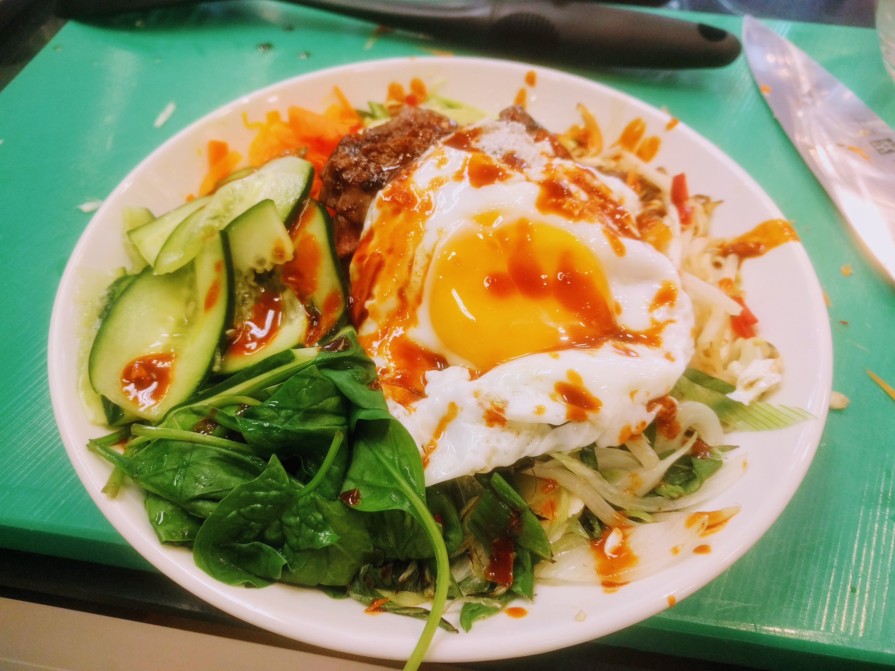

Bibimbap

Pour 4 personnes environ :
- Tous les ingrédients sont facultatifs, cf. remarque en bas.
- Un concombre
- Deux beaux oignons frais
- Un poivron
- Une bonne grosse poignée de champignons shiitake
- Deux grosses carottes
- Une bonne poignée d'épinards frais
- Une poignée de pousses de soja
- Six gousses d'ail
- 300-400g de bœuf à griller
- De la sauce soja (pour la marinade du bœuf)
- Quatre œufs
- Deux bonnes cuillères à soupe de pâte de piment
- Deux cuillères à soupe d'huile de sésame
- Deux cuillères à soupe de vinaigre de riz
- Une grosse cuillère à soupe de sucre
- Sel (idéalement fleur de sel)
- Éplucher et écraser l'ail. Le mélanger avec la pâte de piment, l'huile de sésame, le vinaigre de riz et le sucre. Laisser de côté, pour que le sucre se dissolve bien dans la sauce pendant qu'on fait le reste.
- Si on fait ça avec du bœuf frais, le mettre à mariner dans de la sauce soja.
- Faire cuire le riz, le garder couvert pour qu'il reste chaud.
- Laver et couper les légumes. La plupart doivent se couper en lamelles les plus fines possibles, et longues comme un doigt environ, mais évidemment ça dépend des légumes (les pousses de soja ne se coupent pas, les morceaux de champignons ne doivent pas être trop fins, les oignons frais se coupent de biais pour faire des lamelles assez grosses, etc.). Commencer par les concombres si on en a, comme ça on peut les mettre à part avec un peu de sel pour les faire dégorger pendant qu'on prépare le reste.
- Former un dôme de riz au milieu de chaque assiette.
- Faire sauter les légumes les uns après les autres dans une poêle très chaude, avec un peu d'huile neutre (pépins de raison, colza, tournesol…), pendant quelques instants. Il faut que chaque légume soit à peine doré. Puis, les disposer autour du riz pour que ça fasse des petits tas colorés.
- Égoutter et faire griller le bœuf, le disposer aussi dans un coin de l'assiette.
- Faire les œufs sur le plat dans la poêle qu'on a utilisé, encore une fois avec un peu d'huile. Une fois que le blanc est pris (mais que le jaune est encore liquide), disposer chaque œuf sur le dessus de l'assiette.
- Mettre un peu de sauce au-dessus de chaque assiette pour que ça fasse joli. Servir immédiatement. C'est normal que ça soit tiède, ce n'est pas un plat qui se mange très chaud ; mais si on préfère, on peut passer les assiettes au micro-ondes (ou les garder au chaud dans le four) juste avant de mettre l'œuf et la sauce.
Remarque : Cette recette se fait avec des restes, donc il ne faut pas hésiter à remplacer des ingrédients par d'autres. N'importe quel légume peut passer à la trappe ou être remplacé par autre chose. La viande peut aisément être remplacée par un autre type de viande, y compris des restes que l'on fait réchauffer. La sauce peut être légèrement modifiée aussi ; il n'y a que la pâte de piment qui est difficile à remplacer avec quelque chose de similaire.